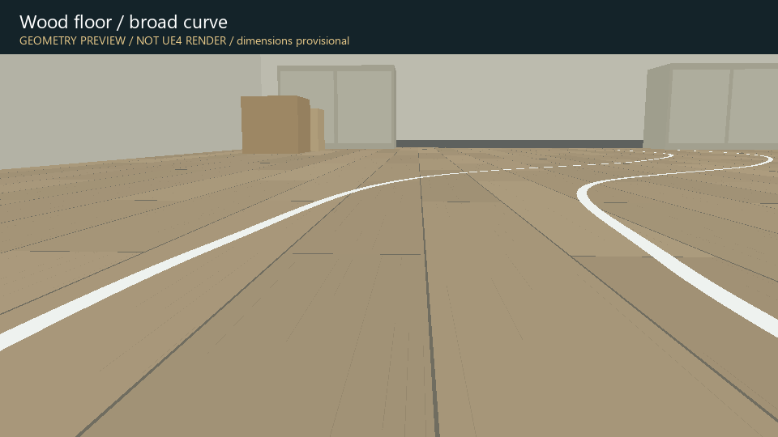

RPI5 AUTOCAR · INDOOR SCENE PROTOTYPE
室內道路 · 可切換場景
依實拍場景特徵製作的三組幾何原型。UE4 原始專案提供相同場景的執行時切換。
這是離線幾何預覽，不是 UE4 實機渲染。尺寸尚未量測校準；預覽未模擬反光材質。UE4 編譯與執行仍待安裝編輯器後驗證。
相機高 15 cm · 俯角 8° · FOV 66°（暫定）

UE4 操作：1／2／3 切換場景；W／S 移動；A／D 轉向；Space 暫停移動；R 重設；C 俯視；T 切換燈號。此版為相機巡覽，不含車輛碰撞或 AirSim 控制。